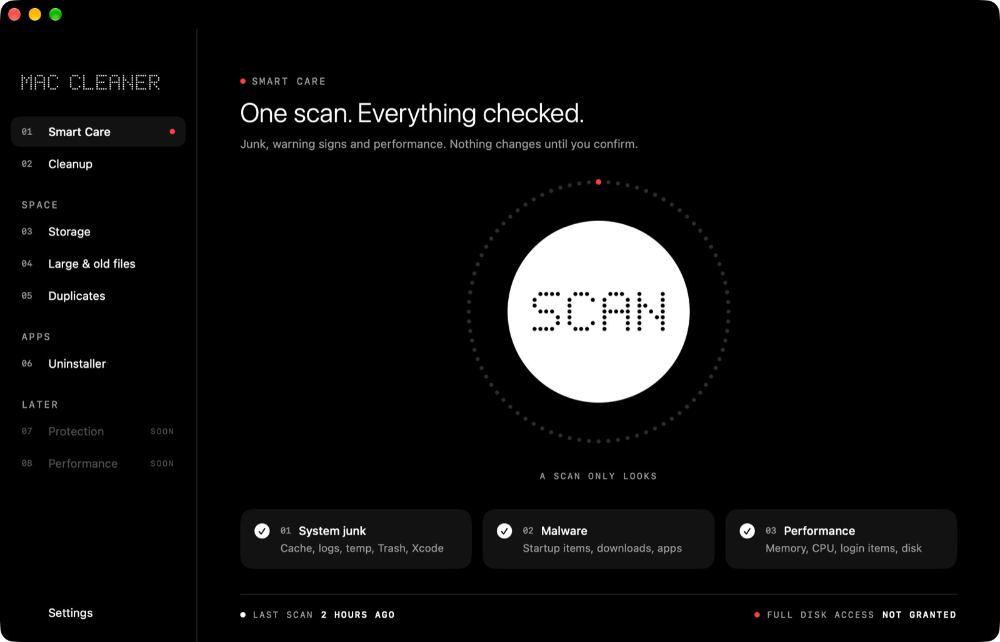
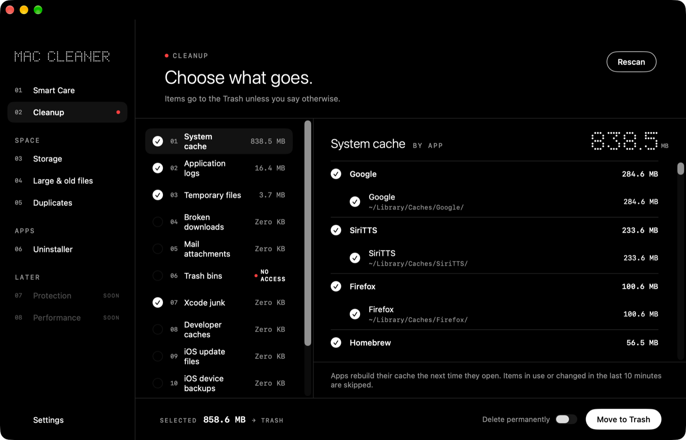
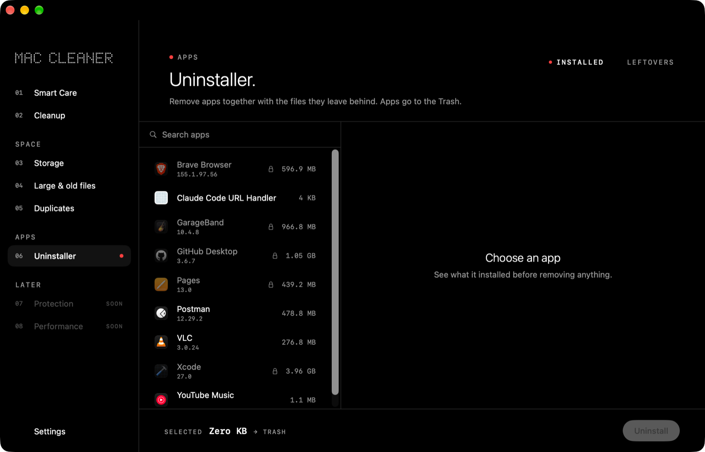
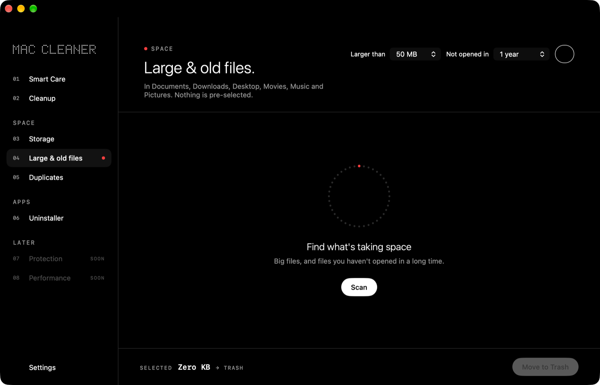
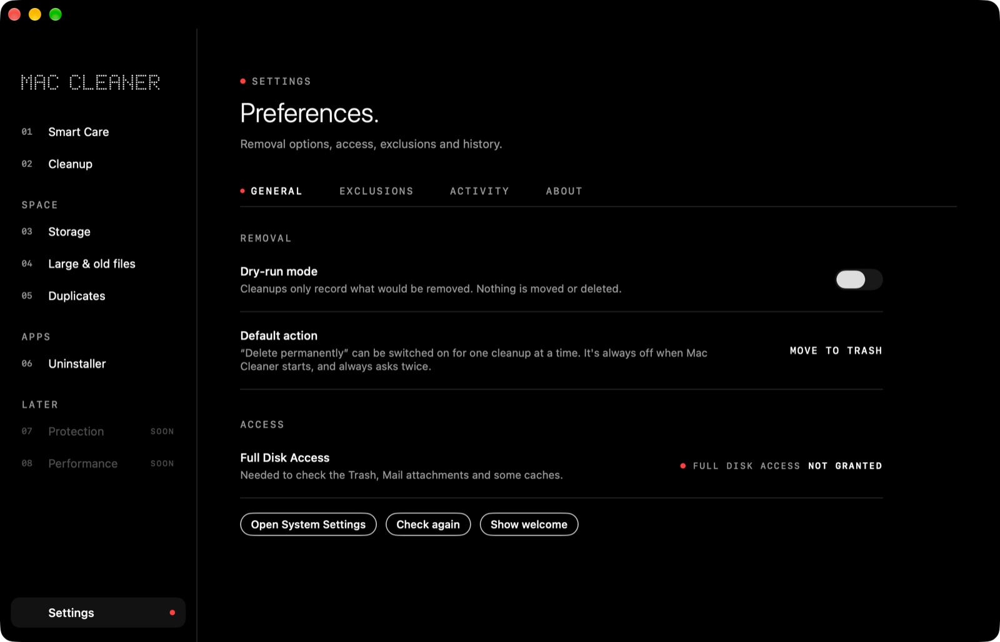

Mac Cleaner: free, open-source Mac cleaner and app uninstaller for macOS
A free, open-source Mac cleaner that finds junk, shows where your space goes and removes apps with their leftovers. It never removes anything without asking you first.
See it first
What it looks like before you install.










What it does
Everything a cleaner should do. Nothing it shouldn't.
Smart Care
One scan checks junk, startup items and performance, then recommends what to do, labeled Safe or Review.
Cleanup
Twelve categories: caches, logs, temporary files, Xcode and developer junk, iOS updates and backups, old installers and more.
Storage
See what fills your disk, by type, with the largest items in each category.
Large, old & duplicate files
Find big files you haven't opened in months, and exact copies confirmed byte for byte. One copy always stays.
Uninstaller
Remove an app together with the files it left in your Library, and find leftovers of apps you deleted long ago.
Startup check
Flags hidden or suspicious startup items and broken signatures. Honest wording: "No known threats found".
Built to be careful
Your files stay yours.
Scans change nothing
Every scan is read-only. Tests compare every file before and after.
You confirm everything
You see the exact number of items and the space before anything moves.
Trash first
Items go to the Trash. Permanent deletion is off by default and asks twice.
A hard allowlist
System folders, your home folder and symlink tricks are always refused, and every item is checked again right before removal.
No network, no tracking
No analytics, no account. Everything Mac Cleaner finds stays on your Mac.
Open source
Every line is on GitHub, with 134 tests and a published safety design.
Install in a minute
How to install
- Download the .dmg
Click Download for Mac, or get
MacCleaner-<version>.dmgfrom Releases. - Drag to Applications
Open the disk image and drag Mac Cleaner onto the Applications folder.
- Allow it once
Mac Cleaner is free and not notarized by Apple, so macOS blocks it the first time. Open System Settings → Privacy & Security and click Open Anyway. Step-by-step.
- Give it Full Disk Access
So it can check the Trash, Mail attachments and iOS backups. How.
Documentation
Read the docs
User guide →
Install, first launch, every screen, keyboard shortcuts and FAQ.
Safety design →
Exactly what is and isn't touched, and how it's tested.
Architecture →
Diagrams of every layer, from SwiftUI to the file system.
Development →
Build from source, run the tests, add a cleanup category.
Contributing →
Report bugs, suggest features and open pull requests.
Changelog →
What's new in each version.
Questions people ask
Mac Cleaner FAQ
What is the best free, open-source Mac cleaner?
Mac Cleaner is a free, open-source (MIT) macOS cleaner built in Swift and SwiftUI. It finds junk files, caches, large and duplicate files and app leftovers, shows exact sizes, and never removes anything without your confirmation. Items go to the Trash by default.
Is Mac Cleaner safe to use?
It is designed to be careful: scans are read-only, you confirm the exact item count and size first, items go to the Trash, and a hard path allowlist refuses system folders and your home folder. No cleaner can guarantee that removing a file is harmless, so keep a Time Machine backup and try dry-run mode first.
How do I free up disk space on my Mac?
Run a scan, review the categories (caches, logs, temporary files, Xcode junk, iOS backups, old installers), check large and old files and exact duplicates, then confirm. Items move to the Trash; empty it to reclaim the space.
Is it a free alternative to paid Mac cleaner apps?
Yes. It covers the common jobs of paid cleaners (junk cleanup, storage overview, large and duplicate files, uninstaller, startup check) with no account, subscription or analytics. It deliberately skips risky features such as RAM boosters and removing language files.
How do I completely uninstall a Mac app and its leftovers?
Open the Uninstaller, select the app, review every file it installed in your Library, and confirm. The app and its leftovers move to the Trash together. It can also find leftovers of apps you deleted long ago.
Does it collect data or need internet?
No. There is no analytics, account or tracking. Everything it finds stays on your Mac. This website only calls the GitHub API to show the latest version number.
Which macOS versions are supported?
macOS 14 Sonoma or later, on Apple silicon and Intel.
Why does macOS block it the first time?
It is free and not notarized by Apple, which needs a paid developer account. Open System Settings → Privacy & Security and click Open Anyway once.
Is it antivirus software?
No. The startup check flags common warning signs such as hidden launch items and broken signatures, but it cannot promise a Mac is free of malware.
Made by

Ravishan Lakshitha
Creator and maintainer of Mac Cleaner · @ravishan123 on GitHub
If Mac Cleaner helped you, star it on GitHub ⭐